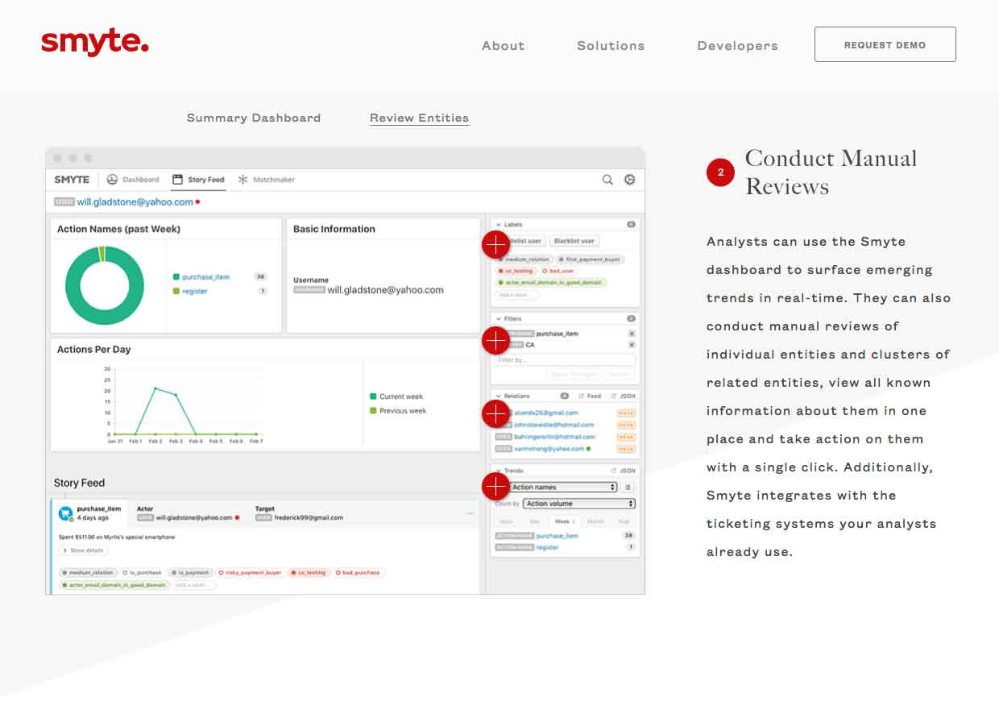
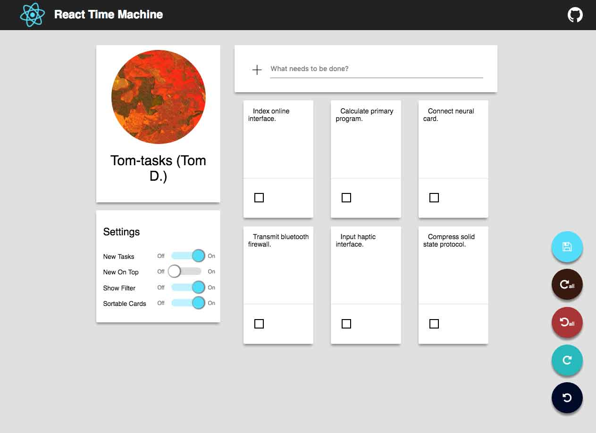

Smyte
- I built most of the front-end for the new Smyte homepage. Smyte was an antifraud tech company founded by Pete Hunt of the React core team.
- It was later acquired by Twitter.

React-Redux Time Machine
- A clone of Ember time machine, but built with React, Redux, and Redux-Devtools instead.
- Includes a robust Undo panel that allows users to time travel within their app's state.
